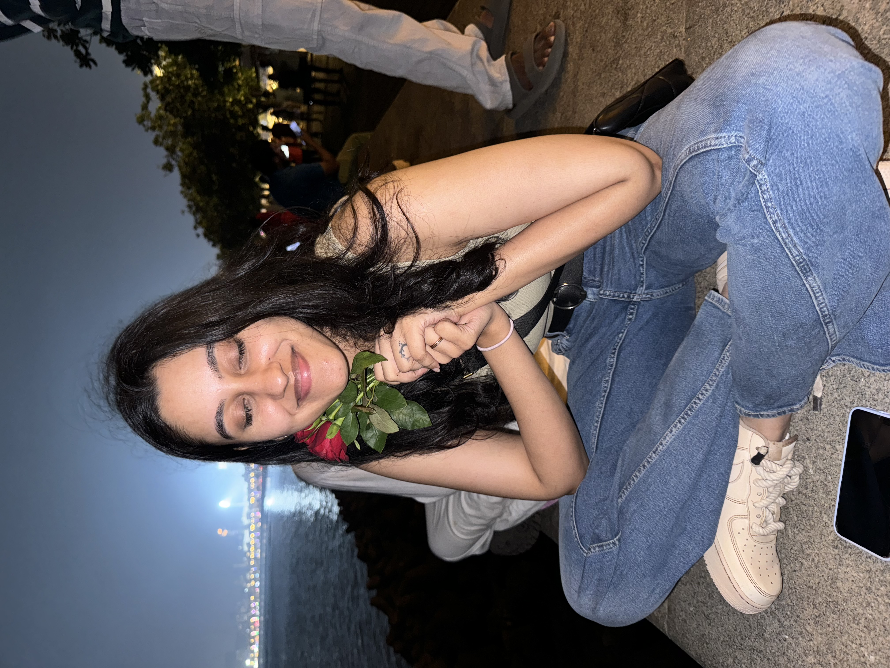
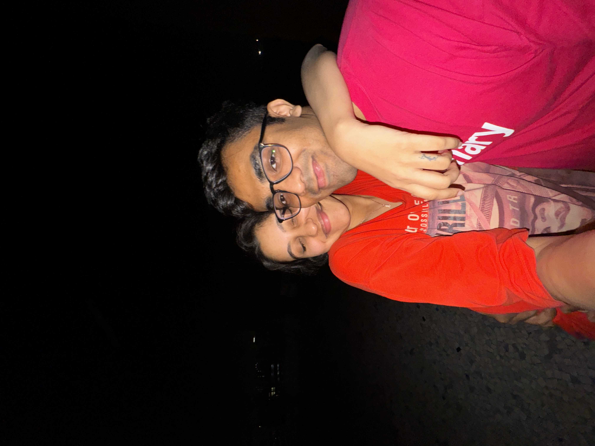
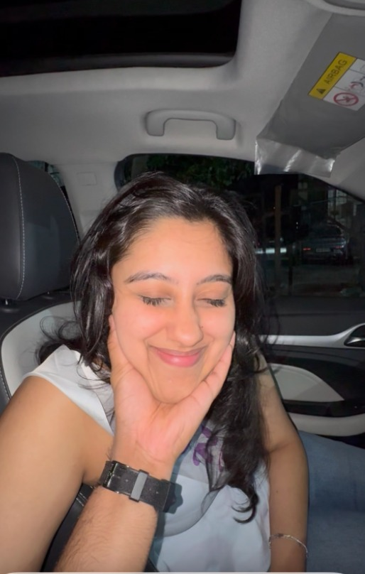
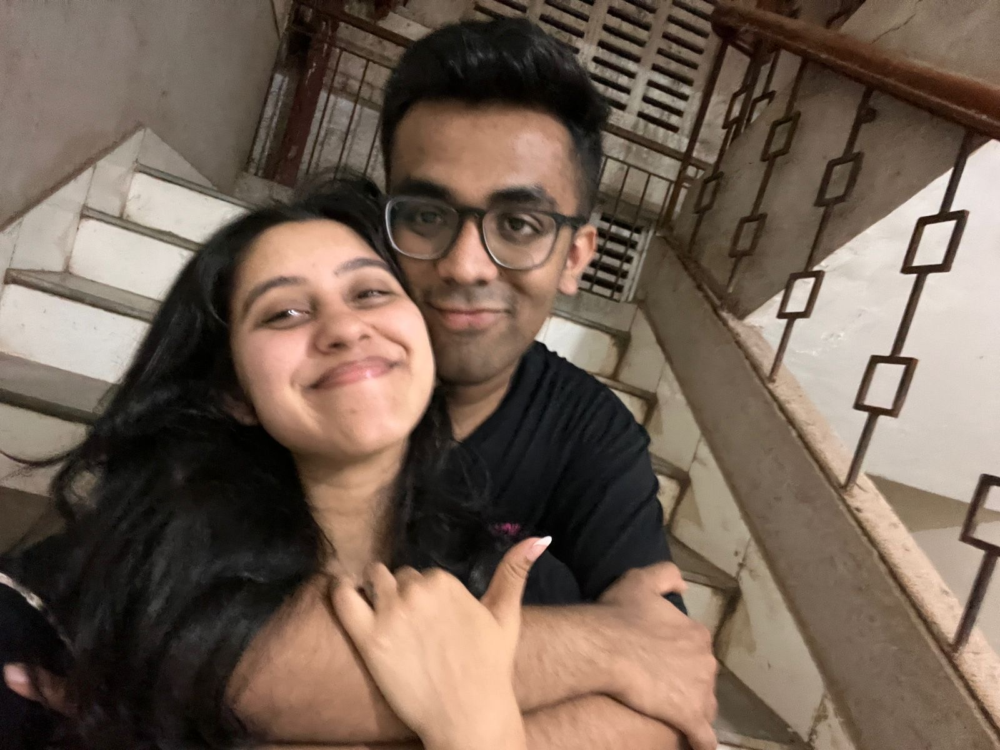
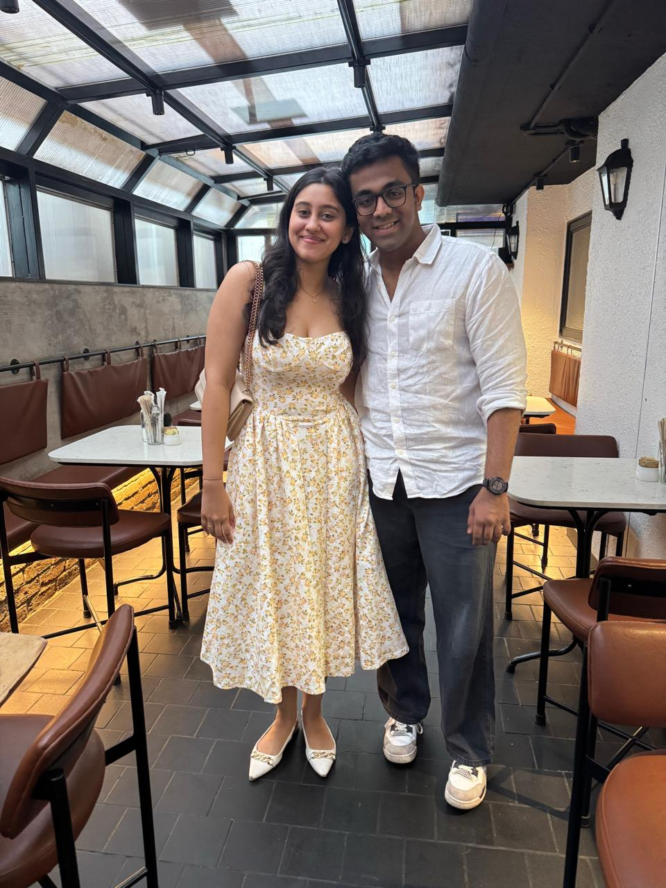
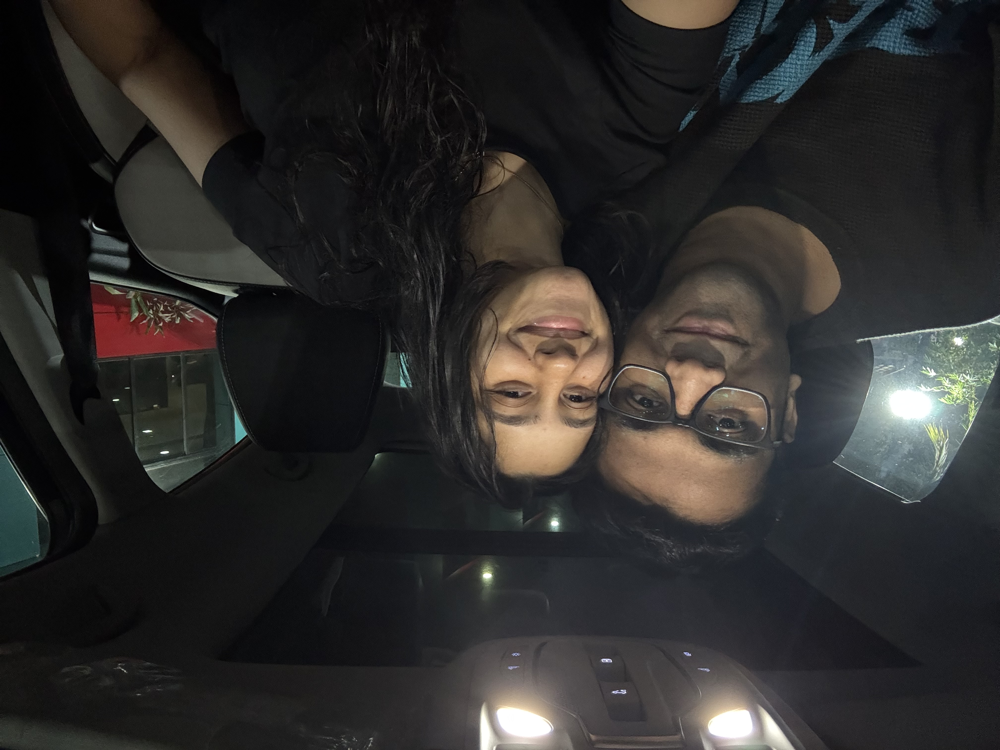

two strangers, somewhere
i know it's not perfect. but i look at it and i think, who could have known. all these years later we'd end up being the most important thing in each other's lives. it's a strange thing to sit with.
my favourite picture of you

you laughed at something i said and i thought — oh. so this is what they meant. all of it. the songs, the poems. this.
five months, and a terrace

five months in, and we were still meeting like we were getting away with something. sneaking up to the terrace.
CUTUUU

every single time I lay out my hand, you put your face on my palm. every time. without thinking. like it's the most natural thing in the world.
the night before london

the night you left for london. we cried in a way i didn't know i was capable of. you kept saying we'd stay the same. i kept saying we'd stay the same. i think we both meant it. i think we were both scared we were lying.
our first trip

you came home from london and we ran away together. our first trip. i remember thinking the whole time, this is it, we made it through the hardest part.
the midnight we didn't get

you were angry i didn't get you a cake. you were also the reason i couldn't come up to give you one at midnight, because your parents were home. both things were true at once. that's how it always was with us, wasn't it. angry and protective and still in love, all in the same breath. i laugh about it now. i hope you do too.
and i didn't know

i didn't know this was the last picture. i think that's the part that undoes me the most. if i'd known, i'd have looked at you longer. i'd have memorised more. but maybe that's the whole point. you don't get to know. you just get to have it